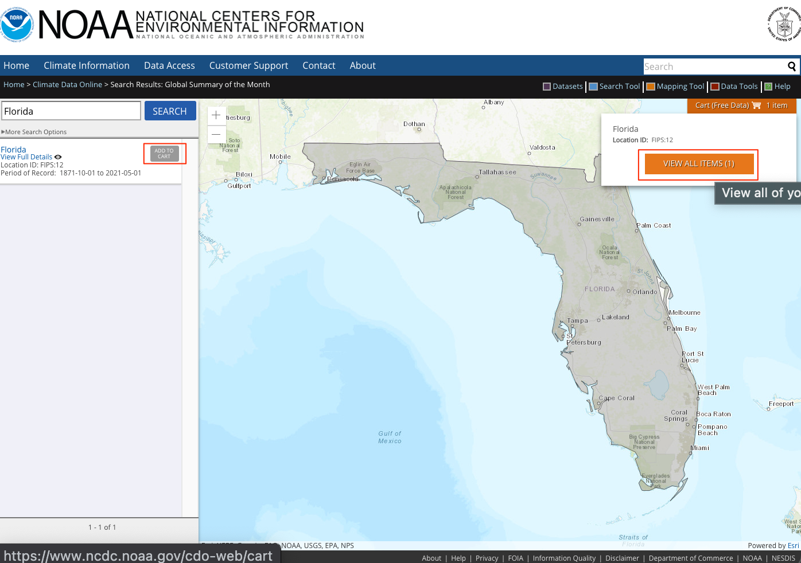
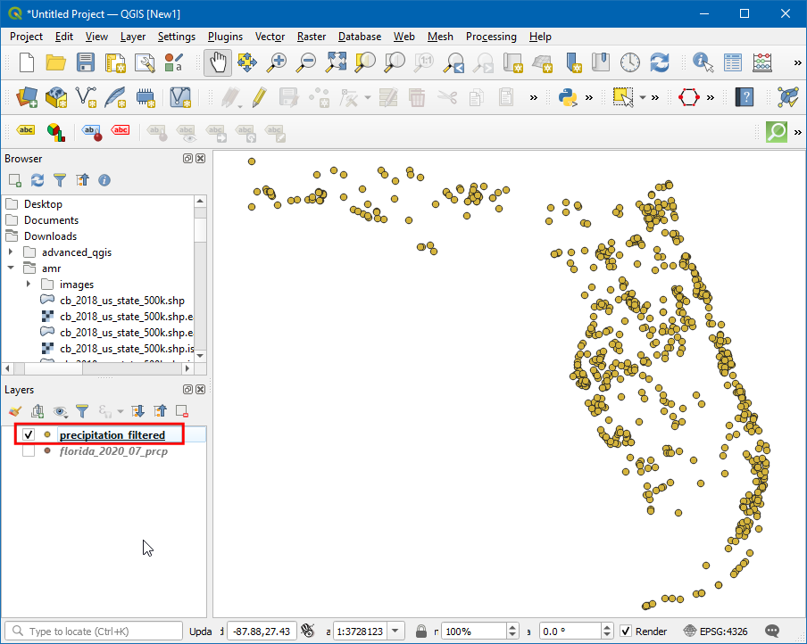
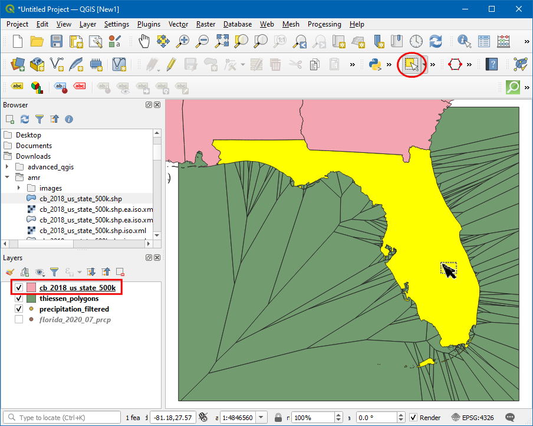
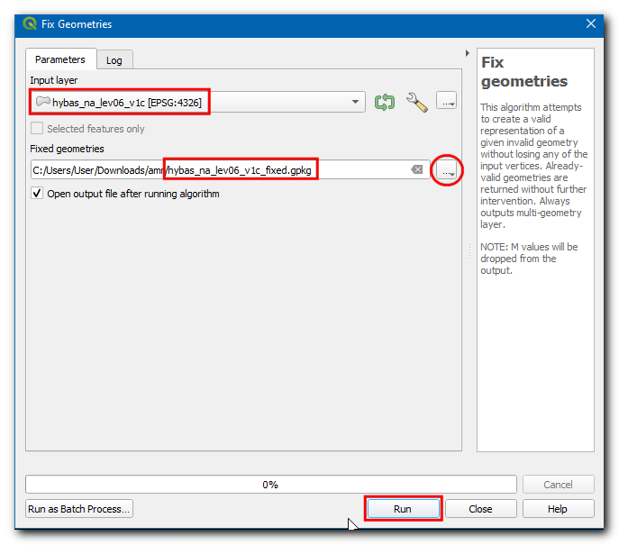
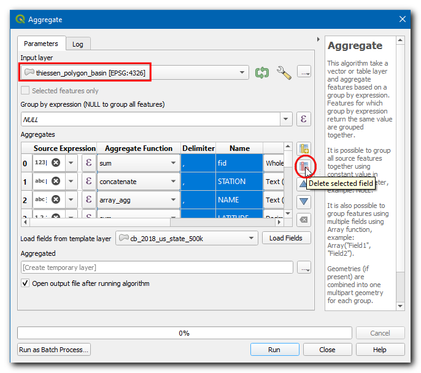
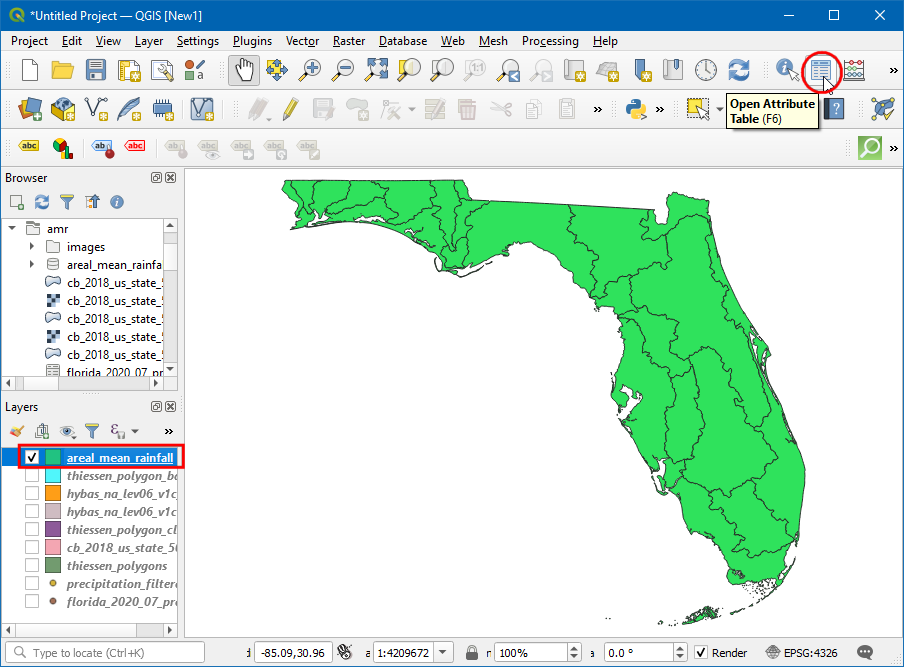

Calcular la Precipitación Media de Área (QGIS3)¶
El cálculo del balance hídrico, modelado de inundación, pronóstico de escorrentía, estudios de clima, etc. a menudo necesitan la profundidad media de precipitación en una cuenca hidrológica como una entrada - que también es llamada Precipitación de Área o Precipitación Media de Área (PMA).
El cálculo de la PMA puede realizarse usando datos de pluviómetro. Usando la ubicación del pluviómetro y la precipitación observada, se puede estimar la precipitación promedio un una ubicación dada usando cualquiera de las técnicas siguientes:
Media Aritmética: Se puede simplemente tomar un promedio de todos los valores observados. Este método asume que el campo de lluvia es homogéneo y que las observaciones de pluviómetro son independientes y dan peso igual a todos los pluviómetros.
Polígono de Thiessen: Este método divide el área usando polígonos de Thiessen con el supuesto de que la precipitación es homogénea dentro del área de cobertura de cada estación. Este método también es llamado una media ponderada por área. Estas suposiciones son buenas para terreno bajo o plano, pero no son apropiadas para terreno montañoso.
Método Isoyético: Esta técnica de interpolación calcula Isoyetas - líneas que unen precipitación igual. Asume que la lluvia entre 2 isoyetas es homogénea. Este método es adecuado cuando la red de pluviómetros es densa.
Ponderación/Cuadriculado de Distancia - Esta es una técnica de interpolación donde una cuadrícula ráster es creado y un valor para cada píxel es estimado en base a la distancia a las estaciones. Una vez que todos los puntos grid han sido estimados, ellos son sumados y la suma es dividida por el número de celdas cuadrícula para obtener la precipitación media de área.
Métodos Geoestadísticos: La lluvia es influenciada fuertemente por factores locales - como la elevación. Usando técnicas de regresión multivariada o Kriging, se puede tomar en cuenta la autocorrelación espacial y puede alcanzar mejor exactitud. Estos métodos son apropiados cuando la distribución de las estaciones pluviométricas es uniforme y densa.
En este tutorial aprenderemos el flujo de trabajo QGIS para calcular Precipitación Media de Área, usando el método Polígono Thiessen.
Vista general de la tarea¶
En este tutorial, tomaremos la precipitación medida por las estaciones de la Red Histórica Global de Climatología (GHCN) y calcularemos la Precipitación Media de Área en cada cuenca hidrológica en el estado de Florida.
Otras habilidades que aprenderá¶
Cómo quitar datos con valores Nulos.
Cómo corregir geometrías no válidas en una capa.
Cómo revisar su Historia de Procesamiento y volver a ejecutar una herramienta con los mismos parámetros.
Cómo disolver polígonos y resumir en estadísticas.
Cómo usar solo objetos espaciales seleccionados en algoritmos de Procesamiento.
Obtener los datos¶
Usaremos las capas de datos NOAA Climate data , HydroSHEDS y US Census Bureau Cartographic Boundary.
Precipitación por Estación¶
Vaya al sitio web NOAA Climate data. Clic en la herramienta Search.

Seleccione
Global Summary of the Monthen Select weather Observation Type/Dataset, luego en Select Date Range elija Julio 2020, en Search For seleccioneStates, en Enter a Search Term escribaFlorida. Clic Search.

Clic Add To Cart. En elementos, clic View Items.

Cámbiese a Custom Global Summary of the Month CSV. Clic en Continuar.

Marque Geographic Locations y en Select data types for custom output, expanda
Precipitation`, seleccione ``Precipitation (PRCP). Clic Continue.

Ingrese la dirección de correo y clic SUBMIT ORDER para descargar los datos.
Cuencas Hidrológicas¶
Vaya al sitio web HydroSHEDS y clic Download.

Seleccione

Ingrese la dirección de correo y clic Submit Request para descargar los datos.

Límites de Estado¶
Visite la página Cartographic Boundary Files - Shapefile. Descargue el archivo cb_2018_us_state_500k.zip de la sección States .
Para su comodidad, puede descargar directamente una copia de todos los conjuntos de datos de los enlaces abajo:
Fuentes de datos: [GHCN], [HYDROSHEDS], [USCENSUS]
Procedimiento¶
Abra QGIS y clic en Abrir Administrador de Fuentes de datos.

En la caja de diálogo Administrador de Fuentes de datos, cambie a Texto delimitado. Clic en
...en Nombre de archivo, luego explore y seleccioneflorida_2020_07_prcp.csv

Ahora, bajo Definición de geometría, elija Coordenadas puntos. Campo X y Campo Y deberían ser Longitud y Latitud, respectivamente. Elija el SRC geometría como EPSG 4326 - WGS 84. Clic Añadir.

Ahora se añadirá una nueva capa punto. Clic en el icono Abrir Tabla de atributo.

En la Tabla de atributos, el campo PRCP representa la cantidad de precipitación en la estación durante julio 2020. También, estos datos son registrados en pulgadas. Note que hay unos pocos valores
Nuloque pueden causar problemas durante el cálculo. Ordene la columna PRCP, y verá que hay una pequeña fracción del conjunto de datos que es Nulo. Ahora vamos a quitar las estaciones con valores Nulos.

Abra la Caja de Herramientas Procesos yendo a , y busque y localice el algoritmo .

En la caja de diálogo Extraer por atributo, seleccione la Capa de entrada como
florida_2020_07_prcp, luego elijaPRCPen Atributo de selección, luegono es nuloen Operador. Clic en...junto a Extraído (atributo), elija Guardar a archivo…. Ingrese el nombre de capaprecipitation_filtered.gpkgy clic Ejecutar.

Ahora es agregada una nueva capa al lienzo. Desactive la capa antigua y podrá ver que las estaciones con valores Nulos han sido quitadas.

Ahora vamos a generar polígonos thiessen a partir de esta capa. Abra la caja de herramientas procesos yendo a , y busque y localice el algoritmo .

Nota
Los polígonos Thiessen representan el área de influencia alrededor de cada punto. Cada polígono define el área que está más cerca a una estación particular que a cualquier otra estación. Esto significa que se asume que la precipitación en cualquier punto es la misma que la de la estación más cercana.
Seleccione
precipitation_filteredcomo Capa de entrada. Como no tenemos datos para ninguna estación pluviométrica fuera del límite de cuencia, podemos añadir algún área de influencia. Ingrese15como la Región búfer (% de extensión). Clic en...en Polígonos Voronoi y seleccione Guardar a archivo…, luego ingrese el nombre comothiessen_polygons.gpkg. Clic Ejecutar.

Se agregará al lienzo una nueva capa
thiessen_polygons. Recortemos esta capa al límite de estado. Busque el archivocb_2018_us_state_500k.shpen Explorador y arrástrelo al lienzo.

La capa de estados está en un SRC diferente que el SRC de Proyecto. Obtendrá un aviso con diferentes opciones para transformar este SRC al SRC de Proyecto. En la caja de diálogo Seleccione Transformación, puede elegir una transformación predeterminada y clic Aceptar.

Ahora vamos a recortar la capa
thiessen polygonsal límite del estado de Florida. Clic en el icono Seleccione objeto espacial por área o Clic único y haga clic sobre el estado de Florida.

Abra la Caja de herramientas Procesos yendo a , y busque y localice el algoritmo .

En la caja de diálogo Cortar, seleccione para Capa de entrada
thiessen_polygons. En Capa de superposición seleccione la capacb_2018_us_state_500Ky marque la casilla Objetos seleccionados solamente, luego clic en...en Cortado y seleccione Guardar a archivo…. Ingrese el nombre comothiessen_polygons_clipped.gpkg. Clic Ejecutar.

La capa de polígonos recortados thiessen
thiessen_polygons_clippedserá agregada al lienzo. Deshabilite la visibilidad de todas las otras capas. Como nuestra tarea es calcular la precipitación promedio sobre cada cuenca, vamos ahora a cargar los polígonos que representan las cuencas. Localice la capahybas_na_lev06_v1c.shpdesde el Explorador y añádala al lienzo.

Notará que cada cuenca está cubierta por varios polígonos thiessen y cada polígono abarca múltiples cuencas. Para visualizar este icono Abrir panel de estilo de capa y cambie la Opacidad a
75%. Ahora vamos a intersectar ambas capas para recortar los polígonos thiessen al límite de cada cuenca.

Abra la Caja de herramientas Procesos yendo a , y busque y localice el algoritmo .

En la caja de diálogo Intersección, seleccione para la Capa de entrada
thiessen_polygons_clippedy para Capa de superposiciónhybas_na_lev06c_v1c, luego clic en...en Intersected y seleccione Guardar a archivo…. Luego ingrese el nombrethiessen_polygons_basin.gpkg. Clic Ejecutar.

La ejecución fallará con un mensaje de error tiene geometría no válida. Por favor corrija la geometría o cambie la configuración de Procesamiento a la opción “Ignorar objetos espaciales de entrada no válidos”. Puede aprender más acerca de este error en el tutorial Manejar Geometrías No Válidas (QGIS3)

Para corregir las geometrías. abra la Caja de herramientas Procesos yendo a , y busque y localice el algoritmo .

En la caja de diálogo Corregir geometrías, seleccione la Capa de entrada
hybas_na_lev06_v1cy clic en...en Geometrías corregidas y seleccione Guardar a archivo…. Ingrese el nombre de archivohybas_na_lev06_v1c_fixed.gpkgy clic en Ejecutar.

Ahora se agregará una nueva capa al lienzo. Podemos ahora intentar de nuevo la intersección. En vez de ejecutar la herramienta de cero y llenar todos los parámetros, podemos recuperar el diálogo prellenado de Historia de procesamiento y modificar solo la capa Superposición. Clic .

Doble-clic en el algoritmo native:intersection de la lista.

Cambie la Capa de superposición a
hybas_na_lev06_v1c_fixedy clic Ejecutar.

Ahora se cargará una nueva capa, y puede ver que
thiessen_polygons_basinestá cortado en base al límite de cuenca.
Ahora vamos a calcular el valor medio de las precipitaciones a partir de los polígonos de thiessen para cada cuenca. Esto se hace utilizando la herramienta Agregar que nos permite disolver los polígonos individuales mientras calculamos las estadísticas de los valores de los atributos. Ahora, abra la caja de herramientas de procesamiento yendo a , y busque y localice el algoritmo .

En la caja de diálogo Agregar, elija la Capa de entrada
thiessen_polygons_basin. Seleccione todos los campos exceptoPRCPyHYBAS_IDy clic Eliminar campo seleccionado.

En Agrupar por expresión, seleccione
HYBAS_ID. Esto significa que la herramienta disolverá todos los polígonos que tienen el mismo valor deHYBAS_ID. En nuestro caso, estos serán todos los polígonos thiessen que caigan en una cuenca. En la sección Agregados, podemos configurar cómo se agregarán diferentes valores de campo a partir de todos los polígonos que son disueltos. Para PRCP, clic en el botón expresión para ingresar la expresión de abajo. La expresión calcula la fracción ponderada por área para cada polígono. Defina la Función agregado comosuma, lo que sumará juntos todas las fracciones ponderadas por área, resultando en la media ponderada por área. Para HYBAS_ID, cambie la Función agregado aprimer_valor. Debido a que estamos agregando todos los polígonos thiessen po su HYBAS_ID, todos los valores serán los mismos y la función primer_valor usará el valor atributo del primer polígono en cada cuenca. Clic en...en Agregado y seleccione Guardar a archivo…. Ingrese el nombre de archivoareal_mean_rainfall.gpkgy clic Ejecutar.
(PRCP * $area) / sum($area)
Ahora se añadirá una nueva capa al lienzo. Abramos la tabla de atributos para explorarla. Clic en el icono Abrir Tabla de atributo.

El campo PRCP contiene la precipitación media de área para cada cuenca, en pulgadas.

If you want to give feedback or share your experience with this tutorial, please comment below. (requires GitHub account)